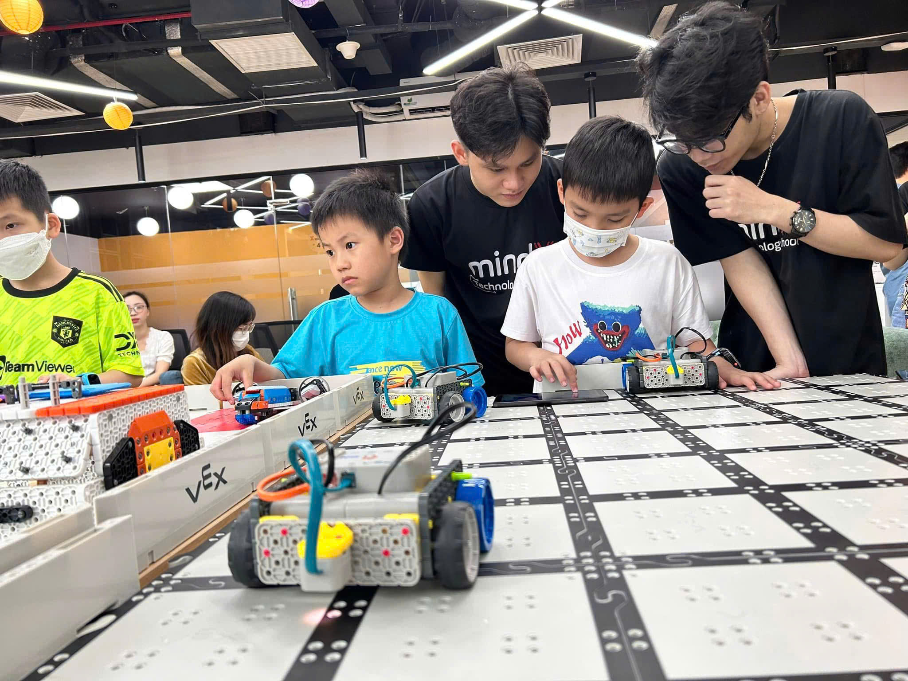

Năm 4: Huấn luyện Robot

Ở năm học này, học sinh sẽ học cách lập trình robot tự động và tối ưu chuyển động.
Robot có thể thực hiện nhiệm vụ mà không cần điều khiển trực tiếp từ con người.
📚 Thông tin khóa học
- Thời lượng: 42 buổi
- 2 giờ / buổi
- 8 – 10 học viên / lớp
- Công cụ: VEX IQ
🧠 Kiến thức
- Hiểu hệ thống robot tự động
- Nắm nguyên lý điều khiển robot
- Hiểu cách robot xử lý dữ liệu từ cảm biến
🛠 Kỹ năng
- Lập trình robot tự động
- Thiết kế robot thực hiện nhiệm vụ phức tạp
- Tối ưu chuyển động robot
📖 Nội dung học
- Robot đi theo line
- Robot tìm ánh sáng
- Robot nhận biết vật thể
- Robot điều chỉnh tốc độ
- Robot giải mê cung
- Robot công nghiệp
- Thuật toán PID Controller
🚀 Dự án cuối khóa
Học sinh xây dựng robot tự động thực hiện nhiệm vụ trong một thử thách thực tế
và trình diễn sản phẩm trước lớp.
← Quay lại lộ trình Robotics